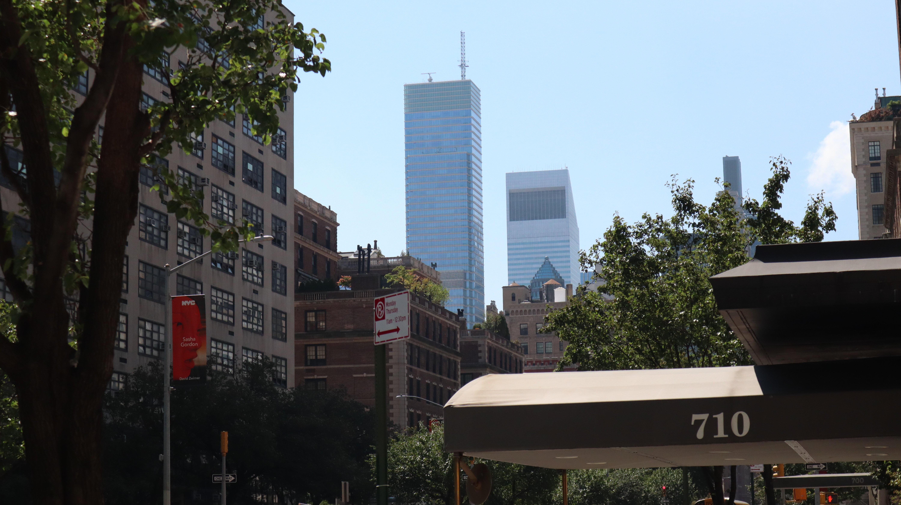
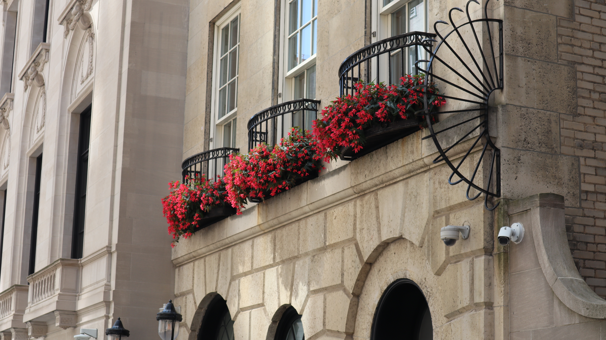

For the photograph of the Skyline, I just was hoping to get a nice upwards angle with a nice walk for the viewers eyes.

For the photograph of the flowers my compositonal ideas were to capture a unqiue angle with flowers as the focal point to center the viewers vision.
Page 2 HOME